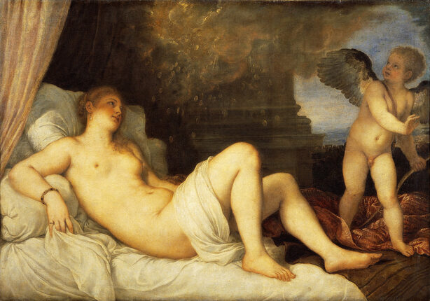

Titian,1488 - 1576,"High Renaissance,Mannerism",Italian,"Tiziano Vecelli or Tiziano Vecellio (pronounced [titˈtsjaːno veˈtʃɛlljo]; c. 1488/1490 – 27 August 1576), known in English as Titian , was an Italian painter, the most important member of the 16th-century Venetian school. He was born in Pieve di Cadore, near Belluno, then in the Republic of Venice). During his lifetime he was often called da Cadore, taken from the place of his birth.",http://en.wikipedia.org/wiki/Titian,255
